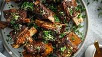

Short Ribs

Description
Garlic braised short ribs with red wine.
Ingredients
- Beef short ribs
- Canola oil
- Onions
- Carrots
- Celery
- All-purpose flour
- Tomato paste
- Red wine
- Beef broth/stock
- A head of garlic
- Herbs (parsley, thyme, oregano, rosemary)
- Bay leaves
- Salt and pepper to taste
Steps
- Preheat the oven to 350° F.
- Season the ribs with coarse salt and freshly ground black pepper. It’s really important not to skip this step! Next you’ll brown the short ribs in a little oil in a large Dutch oven over medium high heat (or hotter depending on your stove; you want it to be screaming hot to get a good sear). Don’t overcrowd your pan as this can make your ribs steam rather than sear. Do it in a few batches if your pot isn’t large enough to ensure that each rib has a small amount of space around it. Remove the ribs and set them aside.
- Add the onions, carrots, and celery to pot and cook them for a few minutes until the onions are soft. Deglaze the pot by scraping the bottom to release any browned bits from searing the meat.
- Sprinkle the flour over the vegetables and add the tomato paste. Stir it well and cook a few minutes longer, then return the short ribs and any accumulated juices to the pot. Pour in the wine and beef stock (you can add a small amount first, scrape up any remaining bits stuck to the bottom of the pot, then add the rest). Add all the herbs to pot along with the garlic. Bring it to a boil, cover, and transfer it to the oven.
- All of that goes really quickly and now you can just relax! Cook until the short ribs are tender, about 3 hours (they’re ready when they fall apart when you test them). Transfer the short ribs to a platter or a large serving bowl, and tent them with foil.
- Strain the sauce into a gravy strainer and remove the fat from surface. Place the gravy into a saucepan, bring it to a boil and keep it at a strong simmer until it’s reduced by 1/3. Season to taste with salt and pepper. This makes an amazing sauce that’s flavored with the fresh thyme and other herbs, vegetables, garlic, and a richness from the red wine. It’s incredible!
- erve the ribs over mashed potatoes or creamy polenta and top with gravy. If you’re watching your carb intake, mashed cauliflower is also delicious.